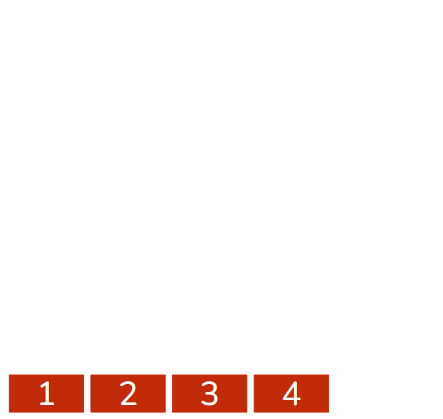
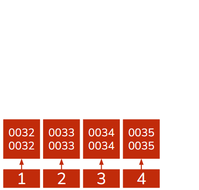
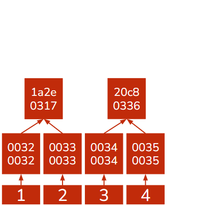
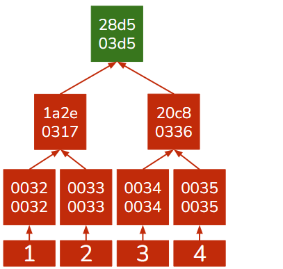

2.1. Chapter¶
Cryptography is the study of securing information derived from complex mathematics. This is a very general definition because cryptography is a very large topic that goes beyond just CS. Cryptography is a fascinating field that lies in the cross paths of computer science and mathematics and is the subject of active research. For those at Cornell who are interested in exploring more of cryptography we recommend CS4830.
Note
When we talk about cryptography in blockchain we are mainly concerned with cryptography’s ability to secure and validate data like blocks and the data they store.
Blockchain depends on two primary cryptographic devices:
Hashing - Used to act as a signature of blocks and the backbone of merkle trees and validate blocks in Proof-of-Work consensus.
Digital Signature - Used to verify individual participants signing off on a piece of data and so validate data in blocks.
The two devices work in tandem and give blockchain trust in a trustless environment. In the previous chapter we left this statement without explaining the seeming paradox of a trusted system composed of untrusted nodes. Both of the cryptographic devices above are rooted in theoretical math and so can be proven correct and valid. Not even dishonest participants can forge them which means their use guarantees trust and validity.
2.1.1. Cryptography Basics¶
Before we get into the intricacies of cryptography we need to understand some basic ideas that cryptography uses. First we need to understand the ‘language’ cryptography operates in, number systems, and how it manipulates this language, bitwise operations.
2.1.1.1. Number Systems¶
As you may or may not know computers don’t understand human languages, they understand binary. Luckily thanks to countless very bright programmers and engineers who built a layer of abstraction we can use computers without knowing binary. But cryptography works at the very ‘core’ of computers and so uses languages they understand.
Binary is at the end of the day what computers really understand, it is the sequential stream of 1’s and 0’s that you see in many movies and images. While it is now closely associated with computers it is first and foremost a number system. When binary is used in computers each numeral (1 or 0) is called a bit and 8 bits is a byte. Bytes form the basis of every piece of computer data.
Number Systems are how we represent numbers. You are most likely accustomed to the base-10(decimal) number system that has 10 numerals. We use it because it is the most intuitive as we have 10 fingers, but it is not the only number system out there. The Babylonians used a base-60 number system and cryptography primarily uses binary and hexadecimal.
We use binary, or base-2 composed of 2 numerals 1 and 0, because it is what basic building blocks of computers, logic gates, can work with.
We use hexadecimal,or base-16 composed of the standard 10 numerals and the 6 letters from ‘a’ to ‘f’, because working with binary is incredibly complicated. Hexadecimal is more terse and is used frequently in lower-level programming, programming that works in languages computers understand more than languages like English.
We will see hexadecimal re-appear throughout the course as we examine the basic building blocks of blockchain implementations like Ethereum.
Example
Below is the number 42 represented in three different number systems:
Binary: 101010
Decimal: 42
Hexadecimal: 2A
2.1.1.2. Bitwise Operations¶
As with all languages, we need a way to manipulate them. Bitwise operations are operators on binary and imitate what logic gates, the basic building blocks of computers, do. While their use-case isn’t immediately clear they are an integral part of computer science with a wide range of applications including cryptography.
Bitwise operations work by taking two binary streams, sequences of 1’s and 0’s, of equal length and produce a new binary stream from them. They do this by analyzing the bytes at every individual position and, depending on what operator, produce either a 1 or 0.
Bitwise Operators are not an easy concept, and we do not expect you to understand them fully. We only want to make sure you have a rough idea of how they work so when we explain processes like hashing you will be able to understand it a little more deeply.
Example
There are many bitwise operators, but we will be looking at OR and AND.
OR - Produces a 1 if either or both input bits are 1 and 0 otherwise. If we had input streams 1010 and 1100 the OR operator would output 1110. This is because when the operator looks at the first bit of both streams it sees it has two 1’s and so produces another 1, the second bit in the streams is a 1 and 0 which produces a 1, the same goes for the third bit but for the fourth and final bit they are both 0 so the OR operator produces a 0.
AND - Produces a 1 if both input bits are 1 and 0 otherwise. Therefore, if we had input streams 1010 and 1100 the AND operator would output 1000.
2.1.2. Hashing¶
A formal definition of hashing is a hash function which takes an input of arbitrary size and produces an output value, a number, of fixed-size, the hash digest. Hash functions are very useful. They appear in data structures, through Hash tables & Merkle trees, password verification and ofcourse data signatures.
There are alot of implementations of hash functions but good ones should share the four following characteristics:
Deterministic - A given input will always produce the same output for the same hash function implementation.
One-Way Function - You can quickly and easily take an input and calculate the output, the hash digest, but you cannot take the output, the hash digest, and quickly get the input. You could say the hash function is not invertible.
Collision Resistant - The number of inputs that share the same output, known as a collision, should be as small as possible. Ideally one input maps to one output but as the output is fixed-size and input can be anything even the best hash functions are bound to have collisions.
Avalanche-Effect - Changing the input even slightly has a profound, and unpredictable, effect on the output.
Tip
The four properties of good hash functions are incredibly important. They are the properties that make hash functions so useful, so they are definitely something to remember.
2.1.2.1. How it Works¶
Hash functions typically work with binary but the hash digest is often represented as a hexadecimal due to terseness. Implementations always try to provide the four properties of good hash functions but how they achieve this varies greatly. We will be looking at SHA-256 because it is the most widely used and is also Bitcoin’s hash function.
Note
Alot of CS textbooks give examples of very simple hash functions (i.e. converting data to a number and the output is that number times two). We disagree with this approach. These kinds of simple hash functions don’t have the four good hash function properties and as such are never used in the real-world. This makes teaching them redundant. We will be showing you SHA-256 which is incredibly difficult but incredibly useful. We do not expect you to understand it. We are putting it in this textbook merely, so you are aware of its inner-workings, and you can rest assured that for 99.5% of blockchain projects you will not have to understand it fully.
From a simplified perspective, SHA-256 works as follows:
Convert the input data into binary.
‘Pad’ the data, add 0’s to the end, and add its original length in binary to it so its final length is divisible by 512, that is its length is divisible by 512.
Divide the entire binary sequence into 512 bit long ‘chunks’.
Taking each chunk one-by-one first divide it further into 16 32-bit ‘windows’ and then add another 48 32-bit ‘windows’ initialized to 0.
For the 16 non-empty windows run some logic and the XOR bitwise operator on them and put the results in the 48 empty windows.
Starting with 8 pre-defined hash values modify them by compressing the 64 words into them through XOR and bit-logic. These 8 hash values will only have pre-defined values when the windows from the first ‘chunk’ are compressed into them. After that the results of the compression are changed. If any of the 8 hash values are greater than 2^32 the modulo operator is applied, so they are always smaller than 2^32.
After we iterated over all the chunks unite the 8 resulting hash functions, convert them to hexadecimal, and you have your hash digest.
We warned you. This is not simple in the slightest and why these steps are the way they are is far beyond the scope of this textbook. If you want one thing to take away from all of this then know that hash functions use bitwise operations, logic and modulo to guarantee the four good hash function properties.
SHA-256 is the hash function we described above, and it is part of the SHA-2 family created by NIST in 2001. It has a 256-bit hash digest. Its notable use-case in Blockchain is Bitcoin.
Keccak-256 is Ethereum’s hash function. It was the original version of NIST’s SHA3 before it was edited by NIST in 2013. These edits caused some concerns that NIST was engineering a backdoor in SHA3 so the creators of Ethereum decided to use the raw unedited SHA3 called Keccak-256. Like SHA-256 it has a 256-bit hash digest.
2.1.2.2. Cracking Hashes¶
There are two primary ways to crack a hash function: finding the input to the hash function from a hash digest, or finding hash collisions.
Collisions are when two different inputs have the same output and while good hash functions should not have alot them advancements in computer processing have made once good hash functions, like SHA-1, susceptible to collision attacks.
Collision Attacks are when you take any piece of data and salt it with additional data so that it has a desired hash digest. This attack can therefore misuse services that, for security reasons, only compare hash digests and not the actual input (i.e. password verification). SHA-1’s algorithm has been cracked to the point that you can find a hash collision in 2^62 calculations. In comparison, for the yet uncracked SHA-256 you would have to do 2^256 calculations to find a collision.
Brute-Force Attacks are attacks that try to reverse a hash function and this is much more difficult, to the point of impossibility, than collision attacks. This is because complex hashing functions cannot be reversed and changing their input gives an unpredictable output so the only way you can find the input for a given output is to try all possible inputs until you get your desired output. For SHA-256 this would take roughly 2^256 computations.For reference this would take the whole worlds computing power more time than the predicted lifespan of the universe. Note, because of collisions even if you find an input that translates to your desired output you can never be sure it is the input you want.
2.1.2.3. Merkle Trees¶
Now that we understand hashing we can cover merkle trees in more depth. Because of how rare collisions in good hash functions are when we compute the merkle root of any data set we can be confident that this root is unique. This makes merkle roots almost impossible to impersonate making them immutable once their root is in the block header. This is because it is practically impossible for an attacker to get the same root hash for a different merkle tree than the one intended so no node in the blockchain network could be tricked into accepting wrong/malicious data.
Example
Lets create a merkle tree with the following pieces of data: the numbers 1,2,3 and 4. For this example we will be using the Adler32 hashing algorithm.
 |
 |
|---|---|
Step 1: Arrange tha values as leaves |
Step 2: Calculate hash digests of values |
 |
 |
Step 3: Combine hashes and calculate their hash digest as the value of the parent node |
Step 4: Repeat step 3 until you have the merkle root, pictured green. |
Merkle trees are secure and space efficient because just like a hash function can represent data of any size, a merkle root can represent a merkle tree of any size. This is particularly important in the space sensitive blockchain were every participant has to store the whole blockchain.
2.1.2.4. Block Validation in PoW¶
In the last chapter we briefly covered block validation and consensus algorithms. Consensus algorithms try to achieve two goals:
Limit the number of valid blocks produced in a time interval. This is to guarantee that every node gets the newest block in time to synchronize before the next block is produced.
Try to express the opinion of an honest majority.
Proof of Work (PoW) is a consensus algorithm that achieves the above by using hash functions. We previously talked about the fact that to get a desired output there is no other solution than brute-force, trying random inputs until one input generates a desired output. While brute-force is often seen as a bad thing it does have some desirable properties:
Given the parameters of the desired hash digest and a known amount of computing power, it takes a predictable amount of time to solve.
If it were a competition, the winner will most-likely be the one with the greatest computing power.
This means that brute-force hashing can limit the number of solutions over a period of time and accurately describe the opinion of the majority. In other words, it solves the two goals we want from a consensus algorithm!
Hash puzzle is the desired output in PoW. The hash puzzle is a hash output that is below a certain value, remember hash outputs are hexadecimal which just represents a number. The value, known as the target, is calculated through something known as the difficulty which roughly equates to how difficult the hash puzzle is to solve. Blockchain’s typically adjust the difficulty depending on how much computing power is present to keep the ‘ABCT’, average block creation time, constant.
Note
Bitcoin has an ‘ABCT’ of 10 minutes and readjusts its difficulty every 2016 blocks, roughly 2 weeks. For the interested, the equations for difficulty and the target are:
Difficulty = (Old Difficulty) * (Time taken for the last 2016 blocks to be produced)/(20160 minutes or 2 weeks) . Limited by a factor of 4.
Target = Difficulty Coefficient * 2^(8*((Difficulty Index)-2))
Difficulty Coefficient - Last 3 bytes of the new difficulty.
Difficulty Index - First byte of the new difficulty.
Difficulty is 4 bytes long.
Difficulty is included in the block header along with a field called the nonce. The nonce is a free field which can be populated with anything and is meant to make the block header smaller than the target.
PoW defines the valid chain as the one with the most cumulative difficulty. As we assume an honest majority, the honest chain will have the most blocks produced and so the greatest cumulative difficulty. Even if a dishonest attacker manages to create a new block, statistically the honest majority will always overtake the malicious chain given enough time.
PoW works on the process that once every node creates its candidate block it will modify the nonce until the hash of the block header is below the target. This is difficult to achieve but very easy to verify, you just evaluate: target > block header.
PoW also has the consequence that the definition of an honest majority is a majority of computing power, even if the number of actual nodes is in the minority.
2.1.3. Public-Private Cryptography¶
We now know how to verify what data is in a block and how to verify the block. What we are missing is how to verify the actual data that goes into the block. This is a very general question that largely depends on what type of data the blockchain is storing but nearly every type of data needs to verify its source. While at first sight this might seem irrelevant, it becomes important when a piece of data orders the blockchain to move money from one account to another.
But how do we do this? Verifying the creator/origin of a piece of data is very difficult as we can’t just give a handwritten signature like we can in the real-world. The solution lies in a topic called Public-Private Cryptography.
Public-Private Cryptography (PPC) is a set of cryptographic algorithms that work on the basis of two keys, a public key and private key. These two keys are mathematically linked in such a way that anything encrypted with the private key can only be decrypted with its corresponding public key and only that public key. The private key is kept private and should not be shared with anyone while the public key can and should be shared with everyone.
PPC is a very important subset of cryptography and is used extensively in real-world applications. PPC provides two key benefits that make it useful:
It can be used to verify that a certain digital entity, represented by a public key, attested to some piece of data, by encrypting it with their private key.
They allow for peer-to-peer secret communication. This is because each side can encrypt their messages with the others public key which can only be decrypted with the other party’s private key. Some PPC algorithms allow for public keys to encrypt and private keys to decrypt.
Blockchain is primarily interested in the first type of application because it can be used in verifying the source of piece of data, a digital signature.
Note
This textbook uses the phrase data signature and digital signature, but they are not interchangeable! Data signature refers to a hash, a unique identifier of a piece of data anyone can calculate while digital signatures are attestations by a public key that can only be signed by the possessor of the corresponding private key.
2.1.3.1. Digital Signature¶
Formally digital signatures are a mathematical method to authenticate the source of a message. They often incorporate the hash of the message they are trying to authenticate in the signature. Digital signatures are meant to be verifiable by anyone but can only be generated by one entity. This is done by the one source or ‘verifier’ encrypting the message/data with their private key and then anyone with their public key, which should be publicly available, and the messages hash can verify their message/data signature.
Tip
Digital signatures boil down to proving one has the private key without actually revealing the private key.
Digital signatures can work with just public and private keys but for a number of reasons, one being they are shorter, participants on the blockchain are identified not by their public key but by their address.
Address is the public key after a couple rounds of hashing and being encoded into a more human-readable format, i.e. Base58 which is shorter and can detect if you make an error writing it. Addresses are smaller than the raw public key and are the most supported method for identifying yourself on most blockchain projects.
Example
In the first chapter we looked at an example with a blockchain tracking how much blocks each participant had. There we just assumed that the data about trading lego was valid, but now we will analyze how we can guarantee that. We are back on the lego blockchain and the current version of the blockchain says you have 3 legos. Let’s say you want to give one of those legos to Alice:
You first write up the transaction that states you are transferring 1 lego to Alice.
You sign the transaction with your private key and broadcast the signed transaction.
Other nodes pick the transaction up and through your address are able to verify you did in fact agree to the lego transfer and considering you have 3 legos the transaction is inductively correct.
The transaction is included in the latest block, and you are down to 2 legos and Alice has one more.
2.1.3.2. PPC Implementations¶
Like with hashing algorithms, there is no perfect PPC implementation with each having pros and cons. We will be looking at two major implementations: RSA and ECDSA.
2.1.3.2.1. RSA¶
RSA, the name is derived form its creators’ initials, was developed in the 1970s and is a PPC algorithm that is ‘double-sided’. By this we mean that you can take either public or private key, encrypt a message and that message can only be decrypted with the other key.
RSA works on the set of real numbers, this will be important later, and heavily relies on the concept of modulo , which guarantees you can’t deduce the private key from the public key and an encrypted message. Its public key is composed of two numbers while the private key is composed of one number. All three numbers are derived from two very large and random prime numbers that have to be kept private as well.
Tip
While RSA encryption is ‘double-sided’ you cannot interchange which key is private and which is public. This is because the public key, composed of two numbers, is generated from the private key. If you use the private key as the public key someone could easily generate the public key you are keeping secret.
RSA is used heavily in industry as it is secure and easy to use.
Note
RSA is one of the more ‘straightforward’ encryption algorithms to understand and for those interested it is one of the topics covered by Cornell’s CS2800
2.1.3.2.2. ECDSA¶
ECDSA, which stands for Elliptical Curve Digital Signature Algorithm, is a PPC algorithm that is ‘single-sided’, you can only encrypt with the private key and decrypt with the public key. ECDSA is very difficult to crack but this is balanced out by the fact that you cannot use it in p2p messaging like you can with RSA. This is because everyone can decrypt a ECDSA-encrypted message, that is very much the point of ECDSA but not very helpful when you are trying to send secret messages.
ECDSA’s power comes from the fact that unlike RSA, it does not work on the set of real numbers but on a group on the prime order. This means that it only works with a certain set of prime numbers. These prime numbers are points on a plane that form the path of an elliptical curve. All you need to know about this elliptical curve is that it is symmetric along the x-axis, and it is defined by an equation.
Tip
Groups are a topic in complex mathematics. Forget about 1,2,3,4,… groups work with only select numbers, often incomprehensibly complicated or long.
One of the implications of ECDSA working on a group is that its operators, like addition or multiplication, are not like the addition and multiplication we are used to. While there are many operators, for our needs we only need to know one, addition. This is because from addition we can get multiplication, which is just addition n many times, and multiplication is key in ECDSA.
ECDSA Addition
ECDSA is not easy to comprehend, and we do not expect you to understand it fully here. Like with hashing we are only putting it here, so you can gain an appreciation for the complexity that goes into the blockchain.
ECDSA is a group so addition means adding two points and getting another point. To further simplify the example, and because we are primarily concerned with multiplication, lets look at the addition of a single point to itself.
k+k: You take the tangent at point k and find the other point the tangent intersects the elliptical curve. Then flip that point along the x-axis, and you have the result of k+k.
This is very easily done one way but given a point it is almost impossible to find the two values that add up to it, the only strategy is brute-force which is very ineffective.
ECDSA starts with a single point on the elliptical point known as the generator point. This point is public and the same for everyone. It then generates a random very large number that becomes the private key. The equation for the public key is then:
Public Key = Private Key * Generator Point
The public key is then used along with the private key, the hash of the message to be signed and a random number known as k to generate a digital signature. This signature can be verified provided you have the message, public key and the random number.
Another benefit of ECDSA is that because the elliptical curve is symmetric along the x-axis we can denote the public key, which is just another point on the curve, just through its x-coordinate and the sign of the y-coordinate rather than the full coordinate. This cuts the size of the public key by nearly half and this version is called the compressed public key compared to the larger uncompressed public key.
Note
Compressed public keys are so small that they are even smaller than addresses. This raises the question of why we use addresses at all? The reason is Bitcoin uses addresses and as the original blockchain project we adopted alot of its features.
But why does Bitcoin use addresses? Well, there is suspicion that its creator was unaware of compressed public keys and thats why Bitcoin uses addresses.
2.1.3.2.3. ECDSA v RSA¶
RSA is an encryption algorithm while ECDSA is just a digital signature algorithm. At first glance it might seem like RSA is the more practical of the two and while it does have more use-cases both algorithms have their benefits and drawbacks.
Algorithm |
Pros |
Cons |
|---|---|---|
RSA |
Can be used for both applications of PPC |
More memory-intensive to store and process |
ECDSA |
More space-efficient when it comes to storage & processing |
Is only a digital encryption algorithm, it can’t be used in p2p encryption |
The space efficiency was the deciding factor for why ECDSA is used in blockchain projects like Bitcoin and Ethereum. When you require every participant to store the whole blockchain a couple more bytes for every piece of data starts to really add up.
2.1.4. Cryptography in Action¶
When describing RSA and ECDSA we used the word random alot. This is incredibly important because the security of both RSA and ECDSA is dependent on being as random as possible. This introduces us to a common problem in cryptography: achieving true random.
True random is something that is incredibly difficult to achieve for computers because they only do exactly as they’re told. This makes generating randomness very difficult because how do you tell a computer, in exact detail, how to return a completely random number? The answer is you can’t. Random functions in most computers aren’t random at all but rather pseudorandom which are derived from mathematical equations. This means they predictably create numbers given a starting number called a seed. While this is ok for picking colors or the name of your rock band it isn’t good in cryptography because attackers can predict these numbers.
We began our discussion of digital signatures with the observation that they are trying to prove you have the private key without actually showing the private key. With possibly thousands of such unique proofs, as different messages need to be verified, it becomes increasingly difficult to keep the private key private. This is where randomness comes in as with a constantly changing random number added in to your digital signature your private key is hidden. If you are only putting pseudo-random numbers in, then the attacker can predict them and then uncover your private key.
Randomness therefore underpins the security of cryptography. You might be wondering how true random is achieved and the solution is the physical world. Some random programs measure the exact heat of the cpu, the background noise or even tell you to move your mouse around. Computers become random by moving the task of randomness, or entropy, onto the physical world which, for the most part, can be very random.
Note
Those who neglected randomness in cryptography are often punished for it. A good example is Sony which used ECDSA for verification in its PS3 store. While this might seem like a responsible thing to do, Sony didn’t use random numbers at all, it just used one number for all of its digital signatures.
The result was that the private key was almost immediately revealed and the PS3 store was hacked.
2.1.4.1. Cryptography in the Blockchain¶
In this chapter we covered hashing and PPC. Their use cases in blockchain are:
Hashing is the backbone of the Merkle Tree data structure that blocks use to store their data.
In PoW, hashing is also used as the solution to block validation and consensus through the hash puzzle.
ECDSA cryptography validates individual pieces of data in a blockchain as it allows anyone to definitely prove the source of or attestation to, a piece of data in the blockchain.
A common format of data in the blockchain are transactions which depend on cryptography even more. This because a standard transaction is composed of:
Sender & Receiver - Often identified through their addresses/public keys
Transaction Amount - Standard Number (No cryptography involved)
Signature of Sender - An ECDSA proof of the sender’s consent to move the amount listed.
You may have noticed that no where in the blockchain transaction did we mention the personal details of the sender or receiver, only their cryptographic keys. This is called pseudonymity.
Pseudonymity is when a party is only reachable through its cryptographic identity which is disconnected from its physical one. There is a gap between the physical and the cryptographic, but it is a gap that can, and sometime has, been bridged.
Being pseudonymous does not imply anonymity. A public key’s interactions are public-knowledge and interacting with well known public keys, like those of a bank or public exchange, can be used along with physical tracking devices, like security cameras, to deduce the actual identity behind the public key.
Tip
On most blockchain implementations the participants are pseudonymous, not anonymous.
2.1.4.2. Back to Byzantium¶
Coming back to the Byzantine General’s problem, this chapter helped the generals verify that messages originate from other generals and are not forged by unreliable messengers. This guarantees communication between generals is un-tamper-able as a modified message would have a different hash which would not fit into the provided digital signature, which cannot be forged because Byzantium nor the messengers have the private key.
We have also started exploring one possible solution for the generals achieving consensus, agreeing on the exact content of the valid chain, through PoW.
The generals now have a message format, the blockchain, that is trustworthy if there is an honest majority and it will now only contain data that verifiably originates from the generals and not some malicious third party. However, we are still lacking coordination, how the generals organize this whole blockchain. This will be the topic of out next chapter, networks.